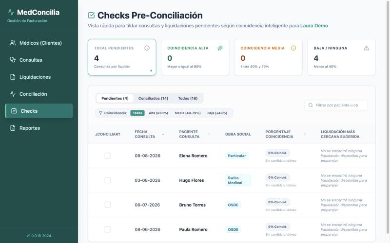

MedConcilia: medical billing reconciliation
Built for my own clients, who are health professionals.
Problem
Clinics pay doctors through settlements that cover many consultations. Checking line by line that every consultation was actually paid is slow and easy to get wrong.
Solution
Upload the consultations and the clinic settlements (Excel). The app matches them, flags what is still unpaid, and scores how likely each pending item is to match.
Analysis
Dashboard showing reconciled vs. pending, total settled, average payment delay and average value per consultation, by insurer, with PDF reports.
ReactTypeScriptFirebaseGemini APIRechartsExcel importPDF export

